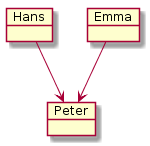
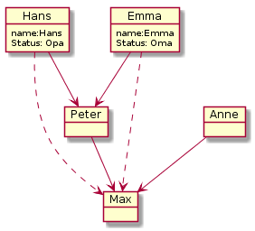
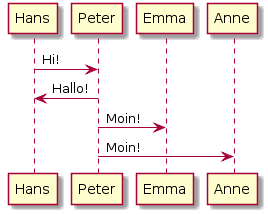
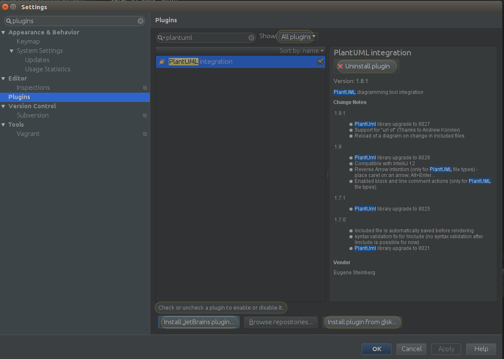
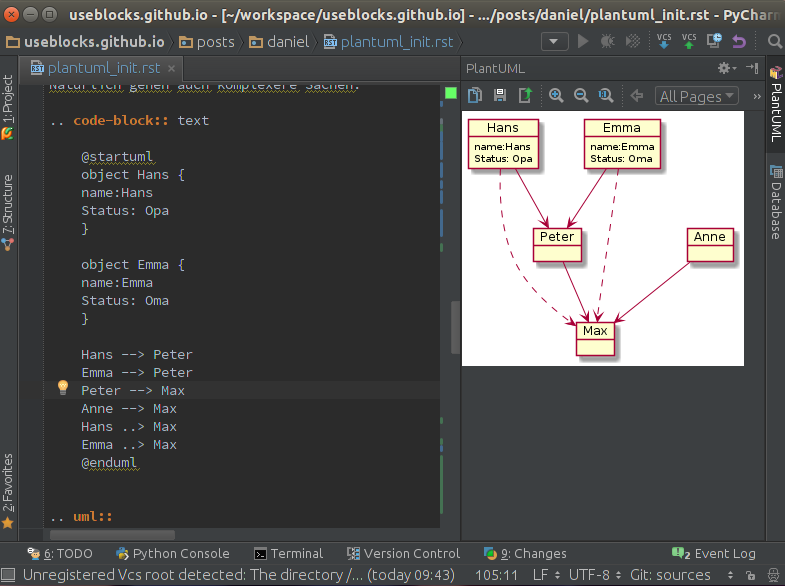

Effektive Diagrammerstellung mit PlantUML¶
Mein Problem¶
Die letzten Wochen habe ich unter anderem damit verbracht ein Datenmodell von Objekten innerhalb eines kundenspezifischen SW-Entwicklungsprozesses zu erstellen.
Wie so oft fängt man erstmal in Powerpoint an, um dann möglichst schnell zu Visio zu wechseln oder gleich ein spezielles Datenmodellierungstool zu verwenden. Allerdings gibt es bei all diesen Tools eine Reihe von Problemen bzw. Unannehmlichkeiten:
Powerpoint, Visio und Co.
Super Sache, wenn man einmalig 10-20 Objekte darstellen und verlinken möchte. Werden es mehr Objekte oder wird die Darstellung immer wieder mal ergänzt verwendet man mehr Zeit mit dem Layout als mit dem eigentlichen Inhalt selbst (Platz schaffen, Objekte verschieben, Verbindungen nachziehen, …)
Datenmodellierungstools wie Enterprise Architect, MySQL Workbench und Co.
Eierlegendewollmilchsäue, die in der Regel jeden Entwickler glücklich machen. Doof nur, wenn das Team nicht nur aus Entwicklern besteht und die Ergebnisse verschiedenen Personenkreisen präsentiert werden müssen: Manager, Projektleiter, befreundeter Arbeitskollege, … Bevor der Kollege verstehen kann, was er dort überhaupt sieht, vergehen dann in Summe schnell einmal 15-20 Minuten. Und das ohne jemals über den Inhalt diskutiert zu haben.
Mein Bedarf¶
Ich suchte also etwas, bei dem wir mit der graphischen Darstellung wenn möglich gar nicht in Kontakt kommen, was man aber trotzdem einem Kollegen schnell erklären kann, ohne dass er selbst das Präsentationstool oder eine spezielle Syntax verstehen muss.
Idealerweise sollte man die einmal erstellte Dokumentation auch einfach wiederverwenden können, z.B in Word oder Powerpoint, als Bilder in Wikis oder zur Anzeige direkt in der Lieblings-IDE.
Ach ja, eine Versionierung z.B in git mit der Möglichkeit sinnvolle Diffs zu machen, wäre natürlich auch super.
Und es wäre gut, wenn es verschiedene Diagramm-Typen zulässt. Z.B: Klassen-Diagramm, Aktivitäten, Sequenzen, …
Meine Lösung: PlantUML¶
Nach etwas Suchen und Testen von 4-5 Möglichkeiten bin in bei PlantUML hängen geblieben.
PlantUML ist eine Beschreibungsart zur Definition von Diagrammen und Sequenzen. Man beschreibt also textuell das gewünschte Diagramm und PlantUML erzeugt daraus dann schöne Diagramm-Bilder.
Der Schwerpunkt liegt dabei auf dem eigentlichen Inhalt und weniger auf der graphischen Repräsentation, so dass man super schnell Inhalte erzeugt. Will man aber das Layout anpassen, z.B Farben ändern oder Blöcke verschieben, ist man schnell aufgeschmissen. Ok, Farben gehen zum Glück in vielen Fällen :)
Bemerkung
Die PlantUML Webseite ist leider voll von Werbung, so dass man ohne Adblocker schnell abgeschreckt ist und das Angebot als nicht seriös ansieht. Einfach davon nicht beeindrucken lassen, es lohnt sich!
Die Sprache¶
Die Syntax ist meistens selbsterklärend und auch ein Ausprobieren führt oft sehr schnell zum erhofftem Ergebnis.
@startuml
object Hans
object Emma
object Peter
Hans --> Peter
Emma --> Peter
@enduml
Daraus generiert PlantUML dann folgendes:

Natürlich gehen auch komplexere Sachen:
@startuml
object Hans {
name:Hans
Status: Opa
}
object Emma {
name:Emma
Status: Oma
}
Hans --> Peter
Emma --> Peter
Peter --> Max
Anne --> Max
Hans ..> Max
Emma ..> Max
@enduml

Es gehen aber Sequenz-Diagramme:
@startuml
Hans -> Peter: Hi!
Peter -> Hans: Hallo!
Peter -> Emma: Moin!
Peter -> Anne: Moin!
@enduml

Was alles geht und wie man es verwendet erfährt man am besten auf der PlantUML Webseite.
Tool Integration¶
Die Sprache selbst kann noch so gut sein, wenn allerdings die Tool-Unterstützung versagt und die notwendigen Schritte zur Generierung der Diagramme komplex und zeitaufwenig sind, dann wird man früher oder später doch wieder bei Powerpoint und Co landen.
Zum Glück bietet PlantUML eine Menge von Tool-Integrationen an.
Ich gehe hier nur auf die Tools ein, die mir z.B. bei der Erstellung dieses Artikels geholfen haben und wo mein persönlicher Nutzen damit am größten war und ist:
- Meine Entwicklungsumgebung: PyCharm (basiert auf IntelliJ IDEA):
- Und unsere Dokumentations/Blog-Software: Sphinx
PyCharm¶
Für Pycharm bzw. IntelliJ gibt es ein PlantUML Plugin, dass sich ganz einfach über den integrierten Plugin-Manager installieren lässt.
Danach läst sich jedes PlantUML-Diagramm, das man irgendwo definiert hat, on-the-fly anzeigen.
Dabei spielt es keine Rolle, ob das Diagramm in einer einzelnen Datei liegt oder ob es Teil einer Beschreibung ist, wie z.B. dieser Blog-Eintrag. Solange @startuml und @enduml vorhanden sind und der Cursor dazwischen steht zeigt das Plugin das Diagramm an.
Sphinx¶
Richtig nützlich wird das Ganze, wenn man sich auch für das fertige Endprodukt nicht um die Generierung der Diagramm-Bilder selbst kümmern muss.
Um dies zu ermöglichen gibt es für Sphinx das PlantUML-Plugin.
Installation¶
1. Plugin installieren
pip install sphinxcontrib-plantuml
2. plantuml.jar besorgen
Die jar von der PlantUML Webseite besorgen.
Zur Einfachheit diese mit ins Sphinx-Projekt-Verzeichnis parallel zur conf.py speichern. Hat den Vorteil, dass auch Kollegen diese Datei beim Auschecken direkt zur Verfügung steht und die folgende Pfadangabe stets korrekt ist.
3. Plugin in der Sphinx Doku aktivieren
Folgende Änderungen an der conf.py vornehmen:
#Plugin aktivieren
extensions = ['sphinxcontrib.plantuml']
# PlantUML Aufruf festlegen
plantuml = 'java -jar ./plantuml.jar'
Verwendung¶
In den rst-Dateien kann man jetzt an beliebiger Stelle ein PlantUML-Diagramm integrieren.:
.. uml::
object Hans
object Peter
Hans <--> Peter
Warnung
Hier darf @startuml und @enduml nicht verwendet werden! Diese Sachen werden automatisch gesetzt.
Bemerkung
Da @startuml fehlt, funktioniert das Pycharm-Plugin leider nicht. Daher setzte ich während der Schreibens @startuml, um es vor der Generierung dann endgültig zu löschen.
Tipps¶
Includes¶
PlantUML kann Dateien inkludieren, sprich man kann sich den Inhalt mehrerer Diagramm-Dateien in ein einzelnes Diagramm laden lassen.:
@startuml
!include klasse_1.puml
!include klasse_2.puml
!include klasse_3.puml
klasse_1 --> klasse_2
klasse_2 ..> klasse_3
@enduml
Statt in den rst-Dateien das Diagramm direkt zu gestallten, kann man diese also auch einfach inkludieren:
.. uml::
!include architecture.puml
Dadurch lassen sich Diagramme einfach wiederverwenden und unabhängig von der Sphinx-Dokumentation pflegen.
use case: Klassen-Diagramme
Sagen wir mal man hat 10 Klassen, die in 3 Packages strukturiet sind, die wiederum ein gemeinsames System bilden.
Statt nun alles in einer Datei zu speichern, kann man:
- 10 Klassen-Dateien,
- 3 Package-Dateien
- und 1 System-Datei erstellen.
Nun kann man all diese Dateien/Diagramm getrennt oder gemeinsam verwenden und verschiedene Views anbieten. Mal nur eine bestimmte Klasse, mal das ganze System.
Und das Beste daran ist, dass die Änderung in einer Klasse sich sofort auf die anderen Zusammenstellungen (Packages und System) auswirken.
Konstanten¶
PlantUML beherrscht auch die Verwendung von Konstanten.
@startuml
!define COLOR #FFCC00
object Hans
object Peter #CCCCCC
object Emma COLOR
object Anne COLOR
@enduml
Dies ist gerade bei Farben sehr hilfreich, da man so die Farbdefinition nur einmal vornimmt und bei Anpassungen auch nur an einer Stelle anpassen muss.
Im Zusammenhang mit den Includes wird es dann richtig mächtig.
color_modern.puml:
!define COLOR1 #FFCC00
!define COLOR2 #AABB00
color_black_white.puml:
!define COLOR1 #FFFFFF
!define COLOR2 #000000
system_architecture.puml:
@startuml
!include color_modern.puml
object Hans COLOR1
object Peter COLOR1
object Emma COLOR2
object Anne COLOR2
@enduml
So kann man sich zentrale Konfigurationsdateien für seine Diagramme aufbauen und die Diagramme selber bleiben von Farbeinstellungen und Co. verschont.
Conditions¶
Conditions können benutzt werden, um z.B. sicher zu gehen, dass sämtliche notwendigen Konstanten auch wirklich definiert sind.
ifdef: if defined …
ifndef: if not defined …
Beispiel:
!ifndef COLOR_1
COLOR_1 #FFCC00
Hier wird COLOR_1 nur definiert, wenn es vorher noch nicht definiert wurde. Dies kann z.B. innerhalb eines includes schon passiert sein, so dass PlantUML bei einer erneuten Definition meckern würde.